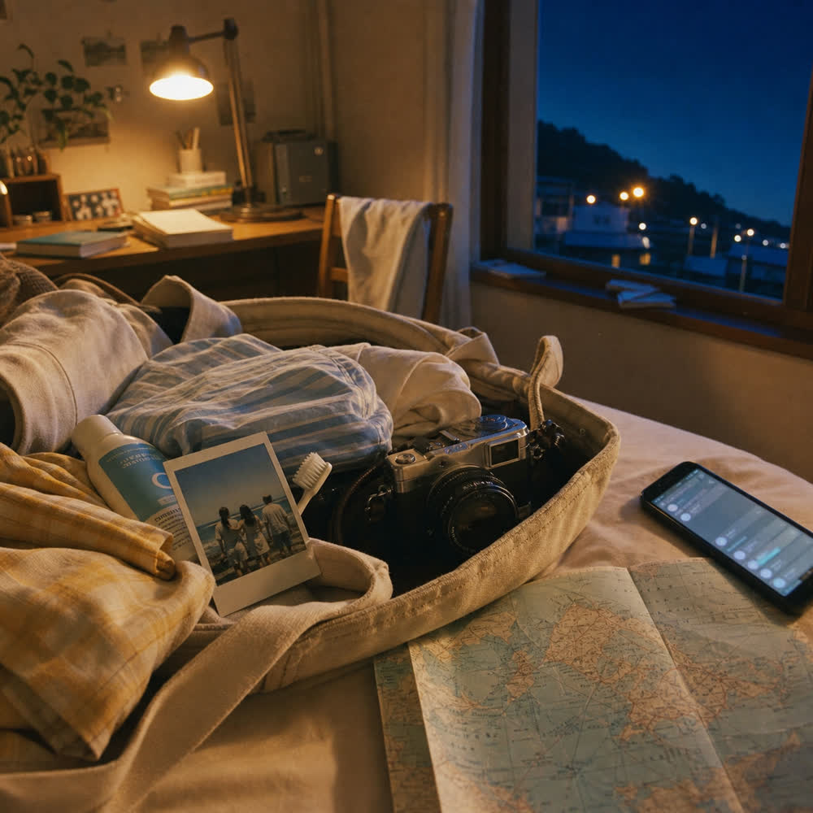
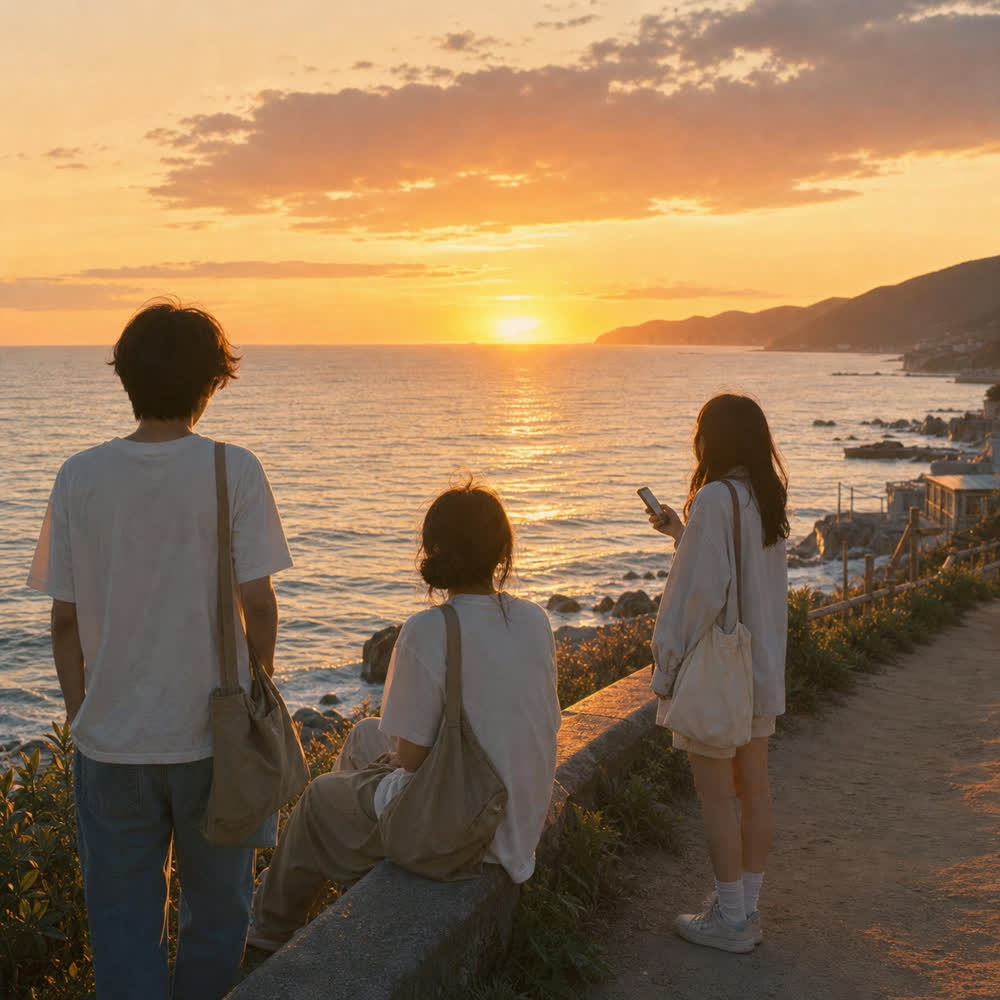
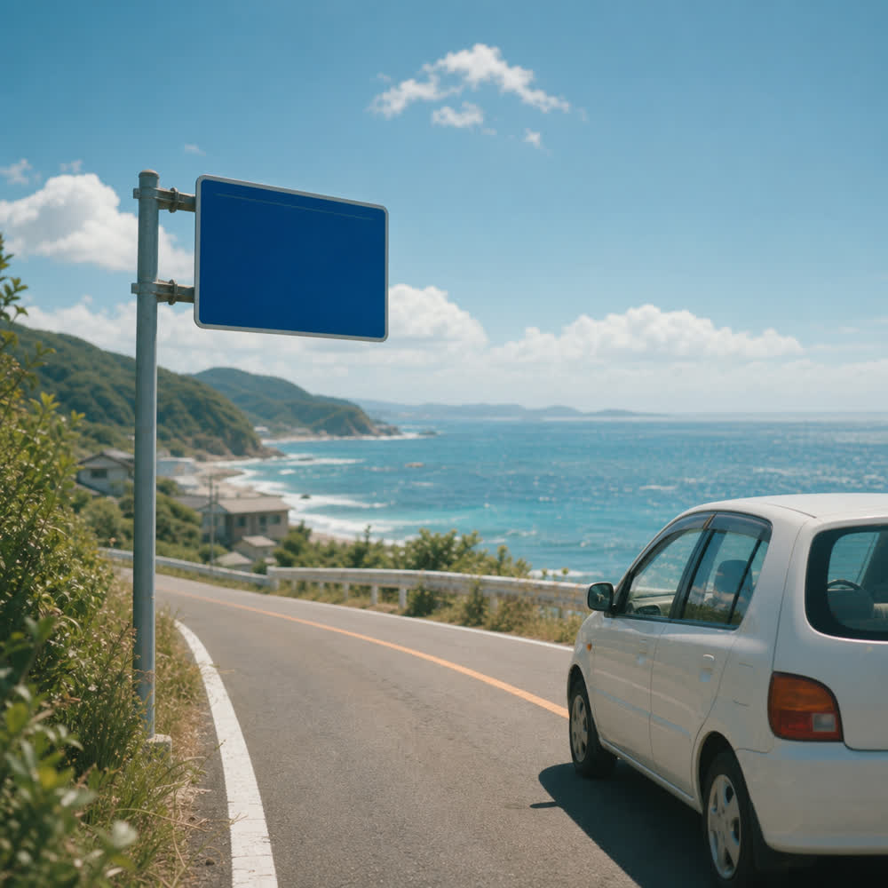
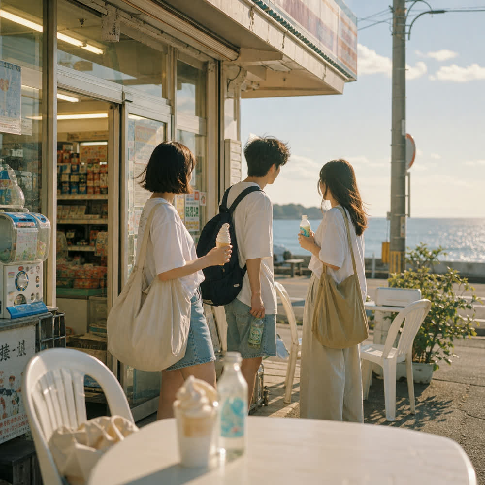
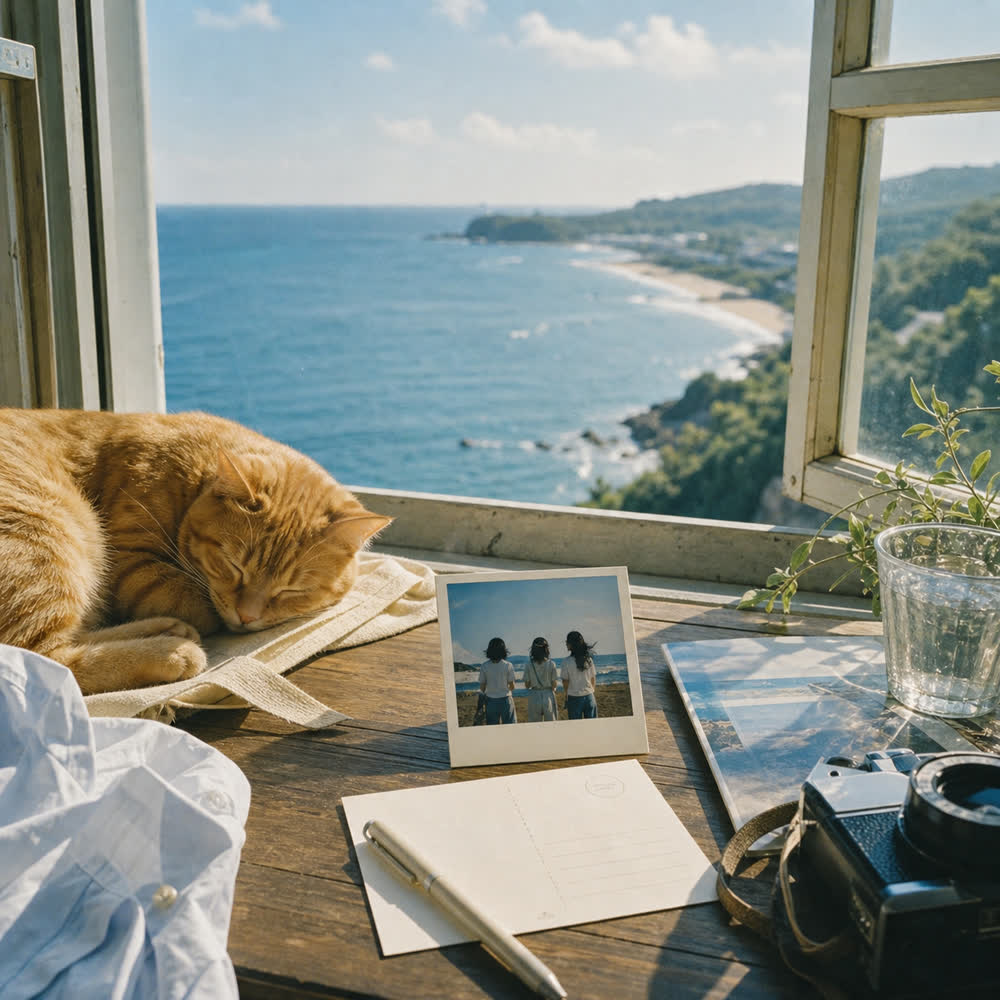

01
寄给夏天
出发前一晚，行李箱摊在地板上，群聊还在跳，窗外的蝉鸣把夏夜拉得很长。

《我们去环岛吧》是一张写给朋友的夏日 EP。毕业后的那个夏天， 三个朋友完成了一次一直想做的环岛旅行。海风、冰淇淋、知了、 沿海公路和偶然遇见的橘猫，被放进六首歌里，像六张没有寄出的明信片。
它不把告别说得很重。只是记录那些很轻的瞬间：群聊还亮着的夜晚， 车窗外第一阵海风，蓝色路牌，便利店门口慢下来的风，日落前没有发送的话， 以及最后谁也没有先站起来的海边。
70% 松弛快乐，30% 不直说的怀念。

出发前一晚，行李箱摊在地板上，群聊还在跳，窗外的蝉鸣把夏夜拉得很长。
白天终于展开，车窗开了一半。朋友们不急着赶往远方，只想把夏天放慢。

沿海公路真正打开。那块蓝色路牌一闪而过，像青春在后视镜里发亮。

沿海路边短暂停靠，冰淇淋快化了，汽水罐冒着水珠，日落还在等下一站。
有些话停在输入框里，像风绕过指尖。日落终于到了海边，人却没有认真告别。

最后一张明信片不写地址，也不写期限。等风吹过窗前，请记得那年夏天。
林屿夏是一个写夏天、朋友和海风的虚拟独立流行歌手。 她的搭档是一只橘猫阿橘，常常出现在旅行照片、明信片和未完成的歌里。
《我们去环岛吧》由 AI 辅助完成企划、视觉和音乐创作探索。 这张 EP 更像一份送给朋友的礼物：真实的情绪，虚拟的歌手，和一阵很长的海风。
联系作者：maoqianqian99@gmail.com